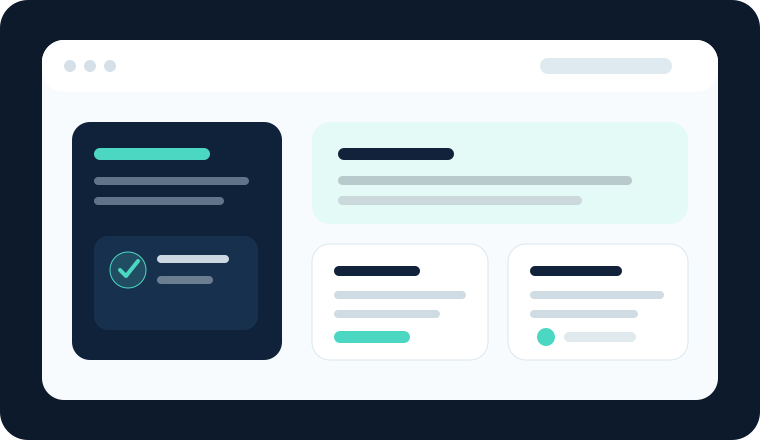
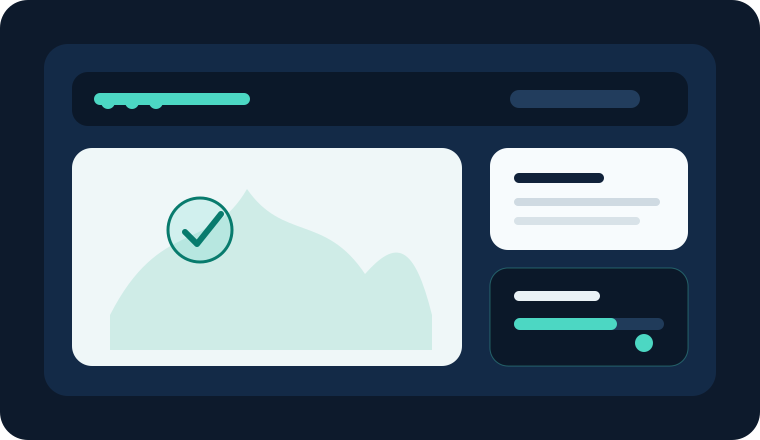
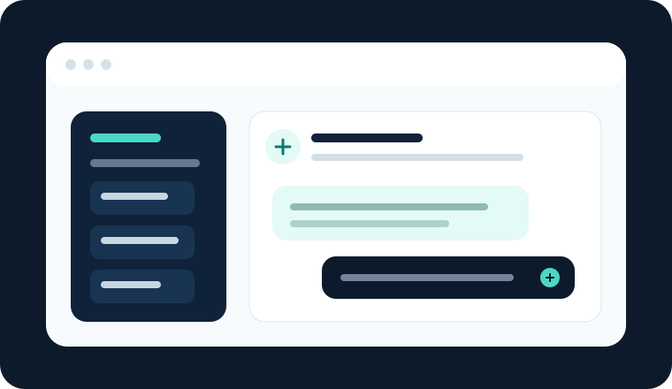

Websites & Plattformen
Mehrsprachige Projektwebsites, Portale, Wissensplattformen, Mitgliederbereiche und interaktive Ressourcen.
Webplattform, App, Serious Game, KI-Assistent oder digitales Toolkit: Wir konzipieren, entwickeln und betreiben die digitale Seite Ihres Projekts als ein zusammenhängendes Arbeitspaket.

Wir übernehmen einzelne Deliverables oder ein vollständiges digitales Arbeitspaket – technisch sauber, verständlich dokumentiert und auf die Projektziele ausgerichtet.
Mehrsprachige Projektwebsites, Portale, Wissensplattformen, Mitgliederbereiche und interaktive Ressourcen.
Nutzerorientierte Web- und Mobile-Apps, Prototypen, Dashboards und projektspezifische digitale Tools.
Lernspiele, Simulationen, Quiz-Systeme und spielerische Formate für Bildung, Forschung und Outreach.
KI-Assistenten, intelligente Suche, Content-Workflows, Datenverarbeitung und praxisnahe Automatisierung.
Interaktive Publikationen, E-Learning-Inhalte, Toolkits, Datenvisualisierungen und digitale Deliverables.
Hosting, Wartung, technische Dokumentation, Schulung und nachhaltiger Betrieb über das Projektende hinaus.
Die folgenden Darstellungen sind illustrative Konzeptbeispiele, keine Kundenreferenzen. Sie zeigen, welche digitalen Lösungen wir für europäische Projekte entwickeln können.

Mehrsprachige Projektplattform mit Ressourcenbibliothek, E-Learning, Veranstaltungen und Partnerbereich.

Interaktives Lernspiel für Kompetenzentwicklung, Awareness, Simulationen und messbaren Lernfortschritt.

KI-gestützte Suche in Projektmaterialien sowie Unterstützung für Content-, Reporting- und Wissensprozesse.
Wir treten als regulärer Projektpartner bei und verantworten definierte digitale Aufgaben, Outputs oder Arbeitspakete.
Wir liefern klar definierte Entwicklungsleistungen als externe Fachfirma mit transparentem Umfang und Meilensteinen.
Wir planen und koordinieren das digitale Arbeitspaket von den Anforderungen bis zu Abnahme, Dokumentation und Betrieb.
Zielgruppen, Programme, Deliverables, Zeitplan und technische Anforderungen werden gemeinsam geklärt.
Wir übersetzen die Projektidee in Nutzerflüsse, Architektur, Design und einen prüfbaren Prototyp.
Die Lösung wird iterativ entwickelt, getestet und mit dem Konsortium abgestimmt.
Bereitstellung, Dokumentation, Übergabe, Schulung und langfristige technische Betreuung.
Gute digitale Projektergebnisse brauchen mehr als Code. Sie müssen zu Zielgruppe, Arbeitspaket, Budget, Zeitplan, Dissemination und Nachhaltigkeitsstrategie passen. Genau diese Verbindung bildet den Kern unserer Arbeit.
Senden Sie uns eine kurze Beschreibung Ihres Projekts, des Programms, der Deadline und der gewünschten digitalen Ergebnisse. Wir melden uns mit einem passenden Kooperationsvorschlag.